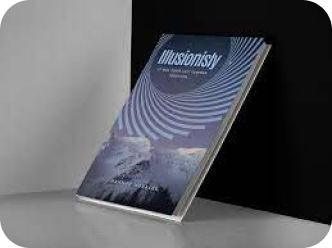

Explore Our Catalog -
Jasneet

The Great Gatsby
Educated: A Memoir
Becoming
The Alchemist
Sapiens: History of Humankind
Where the Crawdads Sing
$25
$20
$15
$75
$95
$70
A classic novel depicting the decadence and disillusionment of the American Dream in the Roaring Twenties.
Tara Westover's powerful memoir of a woman who grows up in a strict and abusive household but eventually escapes to learn about the wider world through.
Michelle Obama's intimate and inspiring memoir, offering a glimpse into her life, her journey, and her commitment to making a difference.
Paulo Coelho's enchanting novel about a shepherd named Santiago who embarks on a journey to find his personal legend
Yuval Noah Harari's thought-provoking exploration of human history, from the emergence of Homo sapiens in Africa to the present day.
Delia Owens' mesmerizing novel about a young woman, abandoned by her family, who grows up isolated in the marshes of North Carolina.